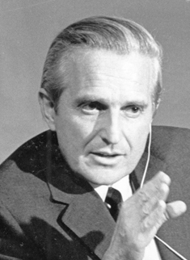
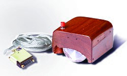

Douglas Engelbart | |
|---|---|
 Engelbart in 1968 | |
| Born | Douglas Carl Engelbart January 30, 1925 Portland, Oregon, U.S. |
| Died | July 2, 2013 (aged 88) Atherton, California, U.S. |
| Education | |
| Known for | |
| Awards |
|
| Scientific career | |
| Fields |
|
| Institutions |
|
| Thesis | A Study of High-Frequency Gas-Conduction Electronics in Digital Computers (1956) |
| |
| Website | dougengelbart |
Douglas Carl Engelbart (January 30, 1925 – July 2, 2013) was an American engineer, inventor, and a pioneer in many aspects of computer science. He is best known for his work on founding the field of human–computer interaction, particularly while at his Augmentation Research Center Lab in SRI International, which resulted in creation of the computer mouse,[a] and the development of hypertext, networked computers, and precursors to graphical user interfaces. These were demonstrated at The Mother of All Demos in 1968. Engelbart's law, the observation that the intrinsic rate of human performance is exponential, is named after him.
The "oN-Line System" (NLS) developed by the Augmentation Research Center under Engelbart's guidance with funding mostly from the Advanced Research Projects Agency (ARPA), later renamed Defense Advanced Research Projects Agency (DARPA), demonstrated many technologies, most of which are now in widespread use; it included the computer mouse, bitmapped screens, word processing, and hypertext; all of which were displayed at "The Mother of All Demos" in 1968. The lab was transferred from SRI to Tymshare in the late 1970s, which was acquired by McDonnell Douglas in 1984, and NLS was renamed Augment (now the Doug Engelbart Institute).[6] At both Tymshare and McDonnell Douglas, Engelbart was limited by a lack of interest in his ideas and funding to pursue them and retired in 1986.
In 1988, Engelbart and his daughter Christina launched the Bootstrap Institute – later known as The Doug Engelbart Institute – to promote his vision, especially at Stanford University; this effort did result in some DARPA funding to modernize the user interface of Augment.
Engelbart won the 1997 ACM Turing Award. In December 2000, United States President Bill Clinton awarded Engelbart the National Medal of Technology, the U.S.'s highest technology award. In December 2008, he was honored by SRI at the 40th anniversary of the "Mother of All Demos".
Engelbart was born in Portland, Oregon, on January 30, 1925, to Carl Louis Engelbart and Gladys Charlotte Amelia Munson Engelbart. His ancestors were of German, Swedish and Norwegian descent.[7]
He was the middle of three children, with a sister Dorianne (three years older), and a brother David (14 months younger). The family lived in Portland, Oregon, in his early years, and moved to the surrounding countryside along Johnson Creek when he was 8. His father died one year later. He graduated from Portland's Franklin High School in 1942.[8]
Midway through his undergraduate years at Oregon State University, he served two years in the United States Navy as a radio and radar technician in the Philippines.[8] It was there, on the remote island of Leyte in a small traditional hut on stilts, that he read Vannevar Bush's article "As We May Think", which would have a large influence on his thinking and work.[9] He returned to Oregon State and completed his bachelor's degree in electrical engineering in 1948. While at Oregon State, he was a member of Sigma Phi Epsilon social fraternity.[10][11] He was hired by the National Advisory Committee for Aeronautics at the Ames Research Center, where he worked in wind tunnel maintenance. In his off hours he enjoyed hiking, camping, and folk dancing. It was there he met Ballard Fish (August 18, 1928 – June 18, 1997),[12] who was just completing her training to become an occupational therapist. They were married in Portola State Park on May 5, 1951. Soon after, Engelbart left Ames to pursue graduate studies at the University of California, Berkeley. At Berkeley, he studied electrical engineering with a specialty in computers, earning his Master of Science (MS) in 1953 and his Doctor of Philosophy (PhD) in 1955.[13]

Engelbart's career was inspired in December 1950 when he was engaged to be married and realized he had no career goals other than "a steady job, getting married and living happily ever after".[15] Over several months he reasoned that:
In 1945, Engelbart had read with interest Vannevar Bush's article "As We May Think",[18] a call to action for making knowledge widely available as a national peacetime grand challenge. He had also read something about the recent phenomenon of computers, and from his experience as a radar technician, he knew that information could be analyzed and displayed on a screen. He envisioned intellectual workers sitting at display "working stations", flying through information space, harnessing their collective intellectual capacity to solve important problems together in much more powerful ways. Harnessing collective intellect, facilitated by interactive computers, became his life's mission at a time when computers were viewed as number crunching tools.[19]
As a graduate student at Berkeley, he assisted in the construction of CALDIC. His graduate work led to eight patents.[20] After completing his doctorate, Engelbart stayed on at Berkeley as an assistant professor for a year before departing when it became clear that he could not pursue his vision there. Engelbart then formed a startup company, Digital Techniques, to commercialize some of his doctoral research on storage devices, but after a year decided instead to pursue the research he had been dreaming of since 1951.[21]
Engelbart took a position at SRI International (known then as Stanford Research Institute) in Menlo Park, California in 1957. He worked for Hewitt Crane on magnetic devices and miniaturization of electronics; Engelbart and Crane became close friends.[22] At SRI, Engelbart soon obtained a dozen patents,[20] and by 1962 produced a report about his vision and proposed research agenda titled Augmenting Human Intellect: A Conceptual Framework.[19] The research was funded by the Air Force Office of Scientific Research, where Rowena Swanson took an active interest in Engelbart's work.[23] Among other highlights, this paper introduced "Building Information Modelling", which architectural and engineering practice eventually adopted (first as "parametric design") in the 1990s and after.[24]
This led to funding from ARPA to launch his work. Engelbart recruited a research team in his new Augmentation Research Center (ARC, the lab he founded at SRI). Engelbart embedded a set of organizing principles in his lab, which he termed "bootstrapping strategy". He designed the strategy to accelerate the rate of innovation of his lab.[25][26][27]
The ARC became the driving force behind the design and development of the oN-Line System (NLS). He and his team developed computer interface elements such as bitmapped screens, the mouse, hypertext, collaborative tools, and precursors to the graphical user interface.[28] He conceived and developed many of his user interface ideas in the mid-1960s, long before the personal computer revolution, at a time when most computers were inaccessible to individuals who could only use computers through intermediaries (see batch processing), and when software tended to be written for vertical applications in proprietary systems.
Engelbart applied for a patent in 1967 and received it in 1970, for the wooden shell with two metal wheels (computer mouse – U.S. patent 3,541,541), which he had developed with Bill English, his lead engineer, sometime before 1965.[29][30] In the patent application it is described as an "X-Y position indicator for a display system". Engelbart later revealed that it was nicknamed the "mouse" because the tail came out the end. His group also called the on-screen cursor a "bug", but this term was not widely adopted.[31] Engelbart's original cursor was displayed as an arrow pointing upward, but was slanted to the left upon its deployment in the XEROX PARC machine to better distinguish between on-screen text and the cursor in the machine's low-resolution interface.[32] The now-familiar cursor arrow is characterized by a vertical left side and a 45-degree angle on the right.
He never received any royalties for the invention of the mouse. During an interview, he said, "SRI patented the mouse, but they really had no idea of its value. Some years later it was learned that they had licensed it to Apple Computer for something like $40,000."[33] Engelbart showcased the chorded keyboard and many more of his and ARC's inventions in 1968 at The Mother of All Demos.[34][35]
Engelbart slipped into relative obscurity by the mid-1970s. As early as 1970, several of his researchers became alienated from him and left his organization for Xerox PARC, in part due to frustration, and in part due to differing views of the future of computing.[1] Engelbart saw the future in collaborative, networked, timeshare (client-server) computers, which younger programmers rejected in favor of personal computers. The conflict was both technical and ideological: the younger programmers came from an era where centralized power was highly suspect, and personal computing was just barely on the horizon.[1][15]
Beginning in 1972, several key ARC personnel were involved in Erhard Seminars Training (EST), with Engelbart ultimately serving on the corporation's board of directors for many years. Although EST had been recommended by other researchers, the controversial nature of EST and other social experiments reduced the morale and social cohesion of the ARC community.[36] The 1969 Mansfield Amendment, which ended military funding of non-military research, the end of the Vietnam War, and the end of the Apollo program gradually reduced ARC's funding from ARPA and NASA throughout the early 1970s.
SRI's management, which disapproved of Engelbart's approach to running the center, placed the remains of ARC under the control of artificial intelligence researcher Bertram Raphael, who negotiated the transfer of the laboratory to Tymshare in 1976. Engelbart's house in Atherton, California burned down during this period, causing him and his family further problems. Tymshare took over NLS and the lab that Engelbart had founded, hired most of the lab's staff (including its creator as a Senior Scientist), renamed the software Augment, and offered it as a commercial service via its new Office Automation Division. Tymshare was already somewhat familiar with NLS; when ARC was still operational, it had experimented with its own local copy of the NLS software on a minicomputer called OFFICE-1, as part of a joint project with ARC.[15]
At Tymshare, Engelbart soon found himself further marginalized. Operational concerns at Tymshare overrode Engelbart's desire to conduct ongoing research. Various executives, first at Tymshare and later at McDonnell Douglas, which acquired Tymshare in 1984, expressed interest in his ideas, but never committed the funds or the people to further develop them. His interest inside of McDonnell Douglas was focused on the enormous knowledge management and IT requirements involved in the life cycle of an aerospace program, which served to strengthen Engelbart's resolve to motivate the information technology arena toward global interoperability and an open hyperdocument system.[37] Engelbart retired from McDonnell Douglas in 1986, determined to pursue his work free from commercial pressure.[1][15]
Teaming with his daughter, Christina Engelbart, he founded the Bootstrap Institute in 1988 to coalesce his ideas into a series of three-day and half-day management seminars offered at Stanford University from 1989 to 2000.[15] By the early 1990s there was sufficient interest among his seminar graduates to launch a collaborative implementation of his work, and the Bootstrap Alliance was formed as a non-profit home base for this effort. Although the invasion of Iraq and subsequent recession spawned a rash of belt-tightening reorganizations which drastically redirected the efforts of their alliance partners, they continued with the management seminars, consulting, and small-scale collaborations. In the mid-1990s they were awarded some DARPA funding to develop a modern user interface to Augment, called Visual AugTerm (VAT),[38] while participating in a larger program addressing the IT requirements of the Joint Task Force.
Engelbart was Founder Emeritus of the Doug Engelbart Institute, which he founded in 1988 with his daughter Christina Engelbart, who is executive director. The Institute promotes Engelbart's philosophy for boosting Collective IQ—the concept of dramatically improving how we can solve important problems together—using a strategic bootstrapping approach for accelerating our progress toward that goal.[39] In 2005, Engelbart received a National Science Foundation grant to fund the open source HyperScope project.[40] The Hyperscope team built a browser component using Ajax and Dynamic HTML designed to replicate Augment's multiple viewing and jumping capabilities (linking within and across various documents).[41]
Engelbart attended the Program for the Future 2010 Conference where hundreds of people convened at The Tech Museum in San Jose and online to engage in dialog about how to pursue his vision to augment collective intelligence.[42]
The most complete coverage of Engelbart's bootstrapping ideas can be found in Boosting Our Collective IQ, by Douglas C. Engelbart, 1995.[43] This includes three of Engelbart's key papers, edited into book form by Yuri Rubinsky and Christina Engelbart to commemorate the presentation of the 1995 SoftQuad Web Award to Doug Engelbart at the World Wide Web conference in Boston in December 1995. Only 2,000 softcover copies were printed, and 100 hardcover, numbered and signed by Engelbart and Tim Berners-Lee. The book was re-published and has been available since 2008.[44]
Two comprehensive history of Engelbart's laboratory and work are in What the Dormouse Said: How the Sixties Counterculture Shaped the Personal Computer Industry by John Markoff and A Heritage of Innovation: SRI's First Half Century by Donald Neilson.[45] Other books on Engelbart and his laboratory include Bootstrapping: Douglas Engelbart, Coevolution, and the Origins of Personal Computing by Thierry Bardini and The Engelbart Hypothesis: Dialogs with Douglas Engelbart, by Valerie Landau and Eileen Clegg.[46] All four of these books are based on interviews with Engelbart as well as other contributors in his laboratory.
Engelbart served on the Advisory Boards of the University of Santa Clara Center for Science, Technology, and Society, Foresight Institute,[47] Computer Professionals for Social Responsibility, The Technology Center of Silicon Valley, and The Liquid Information Company.[48]
Engelbart had four children, Gerda, Diana, Christina and Norman with his first wife Ballard, who died in 1997 after 47 years of marriage. He remarried on January 26, 2008, to writer and producer Karen O'Leary Engelbart.[49][50] An 85th birthday celebration was held at The Tech Museum of Innovation.[51]
Engelbart died at his home in Atherton, California, on July 2, 2013, due to kidney failure.[52][53] A close friend and fellow computer scientist, Ted Nelson, delivered the eulogy at his funeral.[54] According to the Doug Engelbart Institute, his death came after a long battle with Alzheimer's disease, which he was diagnosed with in 2007.[21][55] Engelbart was 88 and was survived by his second wife, four children from his first marriage, and nine grandchildren.[55]
Historian of science Thierry Bardini argues that Engelbart's complex personal philosophy (which drove all his research) foreshadowed the modern application of the concept of coevolution to the philosophy and use of technology.[36] Bardini points out that Engelbart was strongly influenced by the principle of linguistic relativity developed by Benjamin Lee Whorf. Where Whorf reasoned that the sophistication of a language controls the sophistication of the thoughts that can be expressed by a speaker of that language, Engelbart reasoned that the state of our current technology controls our ability to manipulate information, and that fact in turn will control our ability to develop new, improved technologies. He thus set himself to the revolutionary task of developing computer-based technologies for manipulating information directly, and also to improve individual and group processes for knowledge-work.[36]
Since the late 1980s, prominent individuals and organizations have recognized the seminal importance of Engelbart's contributions.[56] In December 1995, at the Fourth WWW Conference in Boston, he was the first recipient of what would later become the Yuri Rubinsky Memorial Award. In 1997, he was awarded the Lemelson-MIT Prize of $500,000, the world's largest single prize for invention and innovation, and the ACM Turing Award.[1] To mark the 30th anniversary of Engelbart's 1968 demo, in 1998 the Stanford Silicon Valley Archives and the Institute for the Future hosted Engelbart's Unfinished Revolution, a symposium at Stanford University's Memorial Auditorium, to honor Engelbart and his ideas.[57] He was inducted into National Inventors Hall of Fame in 1998.[58]
Engelbart was awarded the Stibitz-Wilson Award from the American Computer & Robotics Museum in 1998.[59]
Also in 1998, Association for Computing Machinery (ACM) SIGCHI awarded Engelbart the CHI Lifetime Achievement Award.[60] ACM SIGCHI later inducted Engelbart into the CHI Academy in 2002.[60] Engelbart was awarded The Franklin Institute's Certificate of Merit in 1996 and the Benjamin Franklin Medal in 1999 in Computer and Cognitive Science. In early 2000 Engelbart produced, with volunteers and sponsors, what was called The Unfinished Revolution – II, also known as the Engelbart Colloquium at Stanford University, to document and publicize his work and ideas to a larger audience (live, and online).[61][62]
In December 2000, U.S. President Bill Clinton awarded Engelbart the National Medal of Technology, the country's highest technology award.[47] In 2001 he was awarded the British Computer Society's Lovelace Medal.[63] In 2005, he was made a Fellow of the Computer History Museum "for advancing the study of human–computer interaction, developing the mouse input device, and for the application of computers to improving organizational efficiency."[2] He was honored with the Norbert Wiener Award, which is given annually by Computer Professionals for Social Responsibility.[64] Robert X. Cringely did an hour-long interview with Engelbart on December 9, 2005, in his NerdTV video podcast series.[65]
On December 9, 2008, Engelbart was honored at the 40th Anniversary celebration of the 1968 "Mother of All Demos".[66] The event was produced by SRI International and held at Memorial Auditorium at Stanford University. Speakers included several members of Engelbart's original Augmentation Research Center (ARC) team including Don Andrews, Bill Paxton, Bill English, and Jeff Rulifson, Engelbart's chief government sponsor Bob Taylor, and other pioneers of interactive computing, including Andy van Dam and Alan Kay. In addition, Christina Engelbart spoke about her father's early influences and the ongoing work of the Doug Engelbart Institute.[66]
In June 2009, the New Media Consortium recognized Engelbart as an NMC Fellow for his lifetime of achievements.[67] In 2011, Engelbart was inducted into IEEE Intelligent Systems' AI's Hall of Fame.[68] Engelbart received the first honorary Doctor of Engineering and Technology degree from Yale University in May 2011.[69][70][71]
Engelbart wrote Bush a letter describing how profoundly he'd been affected by the latter's work. "I might add that this article of yours has probably influenced me quite basically. I remember finding it and avidly reading it in a Red Cross library on the edge of the jungle on Leyte, one of the Philippine Islands, in the fall of 1945," he wrote. "I rediscovered your article about three years ago, and was rather startled to realized how much I had aligned my sights along the vector you had described. I wouldn't be surprised at all if the reading of this article sixteen and a half years ago hadn't had a real influence on my thoughts and actions."
{{cite web}}: CS1 maint: deprecated archival service (link)
| External media | |
|---|---|
| Audio | |
| "Collective IQ and Human Augmentation", Interview with Douglas Engelbart | |
| Video | |
| Doug Engelbart featured on JCN Profiles, Archive.org |
.jpg){kind=link}
{kind=link}
{kind=link}
{kind=link}
{kind=link}